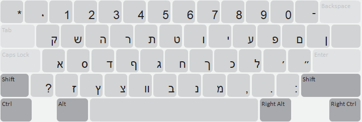
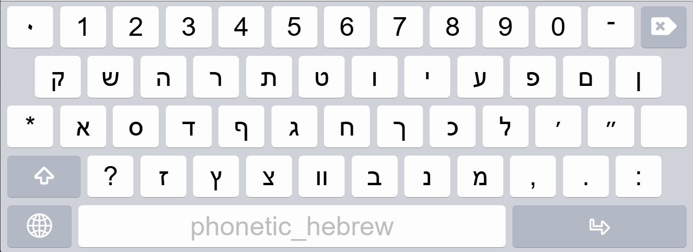

Start Using Phonetic Hebrew keyboard
The Phonetic Hebrew keyboard is designed by assigning the letters to the most similar sound of the English keys or appearance to type the Ancient Hebrew language.
Keyboard Layout
Phonetic Hebrew Documentation in PDF format (English)
Desktop Keyboard Layout

Touch Keyboard Layout
